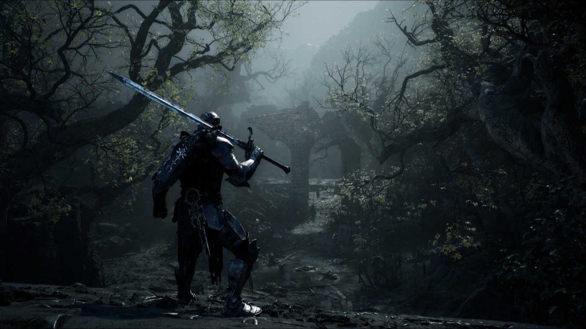

Launched 20 August 2026
Mortal Shell II, with the sources left in
Most guides for this game were written during the open beta and never updated. Some contradict each other about where bosses are. One of the top-ranking sites invents boss names outright. Every page here marks which claims come from Cold Symmetry, which come from someone who actually played the retail build, and which are still in dispute.

Start here
If you are stuck right now, go straight to the fight. If you have not launched yet, the two pages worth reading first are the beta carry-over rules and the PC setup notes — both save you time you cannot get back.
- Magdalena, the Lady of the Woods — the first major boss, and the one most players lose to
- Which Shell to take on your first run — the decision you make before you know what any of it means
- Does beta progress carry over? — short answer: almost none of it
- Stutter and frame drops on PC — what is confirmed, and what the community is arguing about
How we mark things
Every factual claim on this site carries a marker. Hover it, or read the source list at the foot of each page.
| Marker | Means |
|---|---|
| Official | Stated by Cold Symmetry, Playstack, or a platform store listing |
| Tested | Reported by a guide site working from the retail build |
| Unconfirmed | Single source, or a claim we could not cross-check |
| Disputed | Two credible sources say different things — we print both |
Where the guides disagree
These are live disagreements as of 24 August 2026. We would rather show you the fork in the road than pick one and hope.
- Magdalena's location has four published routes. At least one is a beta route that no longer applies.
- Forcing DirectX 11 via launch options is called the single most effective stutter fix by one guide and a guaranteed crash by another.
- The Slayer Seal is recommended without caveat for the Magdalena fight, while a separate beginner guide says it locks you out of some achievements.
Each of those has its own page. None of them is settled.